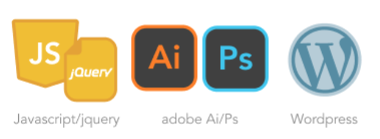
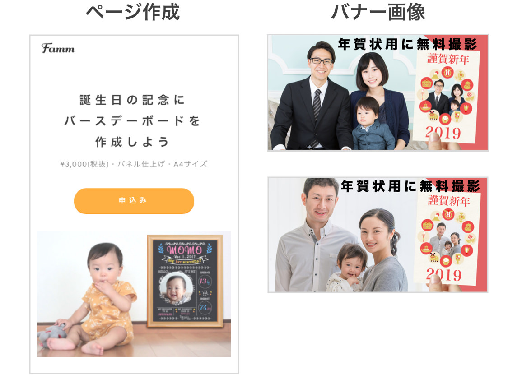
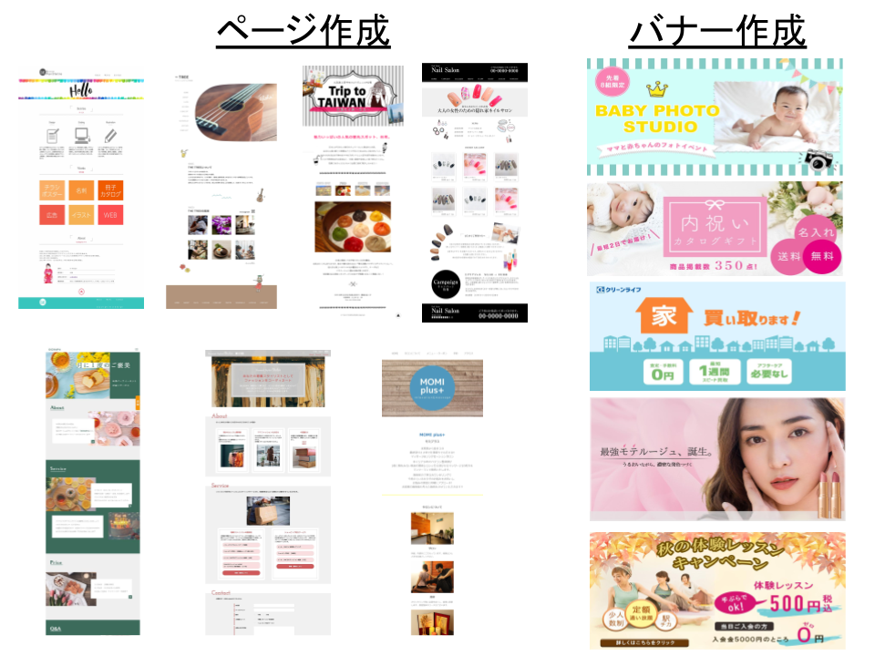
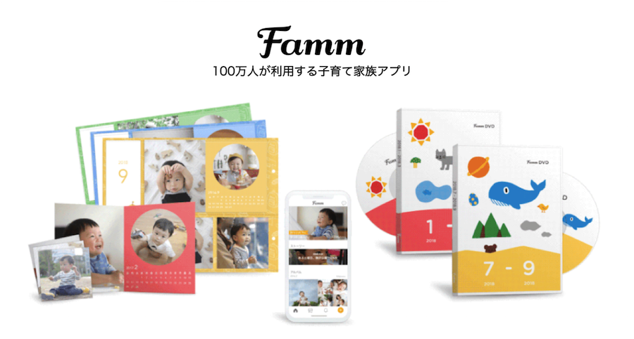

池袋6月開催！
大人気のママ用Webデザイナー講座
お子様と一緒に参加可能!!
~1ヶ月で完結、最大8名の少人数制~
ママの育児と仕事に対する悩みの声
こんなことを思ったことはありませんか？
”子供が大きくなるまでは側にいてあげたいけど、仕事もしたい”
”子育ての合間に、自分の自由時間で少しでも仕事がしたいけど、在宅の簡単な内職作業では、頑張ってもあまり稼ぐことができない”
”スキルアップや新しい学びをしたいけど、子育てをしながらだと子供を預けることもできないし、勉強もできない”
Fammの運営を通じながら、「子育てをしながらの在宅での仕事や、自分の自由時間で、しかもしっかり稼げる仕事」のニーズが大変高いことを肌を持って感じています。
一方で、そのやり方がわからなかったり、子育てをしながらでは、学習をすることも無理と諦めるママの声も沢山聞いてきました。
ママ専用のWebデザイナー養成講座を開講
それらの声に応えたい想いから、短い時間で在宅でしっかりと稼ぐことができ、やってみたいと憧れるママも多い、「Webデザイナー」の教育機会が少ない現状を踏まえ、この度、「ママ専用Webデザイナー養成講座」をFammが開講することになりました。
- 受講は、1ヶ月・全5回の短期間完結
- Webデザイナーの基本ともいえる「ページ作成」と「バナー作成」を身につけることが可能
- お子様とも一緒に参加が可能で、参加者はママ限定
30秒でわかるFammスクールはこちら！
Fammのママ専用Webデザイナー養成講座ならではの強み（※以下で、別途詳細も記載）
子どもと一緒に受講OK
キッズスペース完備
最大８名の少人数制で
未経験でも安心
１ヶ月完結！しかも
通いやすい平日午前中
オンライン(ライブ/録画)
視聴で急な欠席でも安心

講座時間以外も質問OK
講師の丁寧なサポート
仕事受注までサポート
卒業後も他のスクールにはない、大きな強み（※マネー講座のご提供は一部限定地域のみとなります。）
数十万相当が全部タダ
オンラインで学べる応用講座
Illustrator/WordPressなど
(スマホ対応も)
卒業生専用グループに招待
全国の５００名以上の
卒業生ママとの交流が可能
専門家による完全無料の
キャリアカウンセリングを提供
専門家による完全無料の
マネー講座を提供
卒業後も完全無料で応用講座を受講し放題
HTML/CSS以外にも様々なソフトやサービスについてのオンライン講義をご用意
動きのあるサイトを制作
Javascriptやjqueryを学んで、
Webサイトのデザインの応用や、動きのある
コンテンツの作成を目指す応用講座です
スマホに対応
PC向けだけではなく、スマホ向けの
Webデザインを習得できます
PhotoshopやIllustratorも
デザインの幅を広げる応用講座です。
案件取得や就職の武器になります
ポートフォリオの作成
案件取得に有効な作品集の作り方や
便利なサービスをご紹介します
恵比寿、横浜だけでなく池袋でも毎回即満席に
大変ありがたいことに、これまでに恵比寿で開催された第１期（３月期）～第２７期（６月と９〜１月は月２回開催・２月は３回開催・３・４月は３回開催）が、即満席（最大定員８名）に。 さらに７月から開催している横浜でも、第１期～第１５期講座（７～５月期）が募集から即満席に。 そして１０月には初の池袋での開催でしたが、大変ありがたいことに募集開始から数日で満席に。 無料説明会ならびに本講座への申込について、想定を大幅に超える大反響をいただきました。 今回、多数の追加開催に対するご要望の声を受けまして、大人気の本講座の池袋６月期の開催が決定し、「池袋１１期生」の募集を開始いたしました。
講座の潜入取材記事はこちら！
https://laxic.me/interview/2019/11/vol146ママさん達の「自分らしい働き方や中長期のキャリアを考えるきっかけ作り」のためのメディアであるlaxic（ラシク）様に、潜入取材いただきました！よりリアルな講座の様子や、受講生のインタビューも載っているのでぜひ御覧ください。
できるようになること（ページ作成とバナー作成）
下部イメージのような制作物ができるようになります。
- HTML・CSS・グラフィックソフト（Photoshop）のスキルを身に付けることができます。
- 作成だけでなく、実際にウェブ上で公開をすることまできちんと対応しています。
ここまで行うことで、講座で学んだスキルを基に、仕事の依頼を受けることが可能になります。
卒業生の講座中の作例（※説明会では、さらにご紹介いたします）
子連れOK、シッター預かりで安心、教室の近くにお子様もいらっしゃいます
- 子供と一緒に参加可能
講義スペースの近くに「シッターさん常駐のキッズスペースを設置」、安心して受講可能です。 また、講義スペースで一緒に参加することも可能です。
- 参加者は、未経験のママに手厚くケアできるよう、最大8名様までの少人数
参加者のママは、ほぼ全員が未経験者なので、ご安心ください。 過去の実績から、未経験でもしっかりとページ作成やバナー作成ができるようになっています。 また、ママだけに限定しているので、お子様がいても周りの理解があって安心、ママ同士の交流もできます。 8名という定員にもこだわりがあり、講義中＆自宅でのサポートを十分にするために、あえて最大8名までにしています。 （※毎回8名を超える申込がありながらも、8名超の設定にする予定はございません。）
- 1ヶ月の短期で完結、平日の午前中に実施
忙しいママ向けだからこそ、本当に必要な内容に絞って、１か月の短期で身につくカリキュラムです。 また、ママにとって最も参加しやすい平日の午前中に開講するので、講義にも参加しやすくなっています。
- 出られない日があっても安心、講義の内容を視ることができます
お子様が急に熱を出されたり、パートナーの仕事で急用が発生したりと、急に出られなくなることもあるかと思います。 講義の様子を、「リアルタイムでも録画でも」オンラインで視ることができるのと、少人数制だからこその、講義前後での講師によるサポートも可能です。 もし、急に出られなくなったり、最初から出られない日がわかっていたとしても、安心して受講をしていただけます。
- Fammからの案件の受注も可能に（受注実績作りまでサポート）
講座の卒業後、Fammより実際の案件の発注も可能です。 継続的に仕事を得るために必要な「実績作り」のサポートも、Fammというアプリを運営する事業会社だからこそ、可能です。 過去の卒業生の中で、早くもこの発注をきっかけにして次の仕事につなげている方も多数いらっしゃいます。 （就職が決まった方も早くもいらっしゃいます）
Webデザイナーは、在宅で隙間時間に高単価案件の仕事ができる職種
Webデザイナーは、「在宅で」「自分の空いた時間に」「高単価」の仕事ができる職種です。
これまでの在宅ワークの代表的な「記事作成」「電話対応」「アフィリエイト」と異なり、「女性・ママならでは」の視点を活かすことができたり、手に職をつけて、高単価の仕事をし続けることができます。 そのため、ママの中でも大変人気で、憧れる方も多い職種になっています。
実際に、
- バナー作成で数千円（※慣れれば1～2時間程度）
- ページ作成までできれば、数万円～10万円超（※慣れれば、1日～数日）
また、以下のような大活躍されるママWebデザイナーも増えてきています。 （※ヤフーニュースでも、採り上げられることが多いです。）
例1 月収60万円(フリーランス、毎日）
例2 月収30万円(フリーランス、平日3日間）
例3 月収15万円(在宅で、週1～2日）
ママWebデザイナーも、ママ専用のWebデザイナー講座もとても少ない

一方で、まだまだママWebデザイナーは少ないのが現状です。
- 難しそう
- 学び終わるまでに時間・期間がかかりそう
- 子供がいると学ぶ時間や場所が無い
さらに、「ママ専用」のWebデザイナー養成講座は、現在存在していません。
多くのWebデザイナースクールは、子供が預けられなかったり、開催時間が夜や休日中心だったり、参加者がママ以外の人がいたりと、ママが安心して教育を受けられる機会が極端に少ないのが現状です。
そのような状況に大きな課題感を持ち、私どもがこの講座を開始しました。
現職や復職に向けて「Webデザインの学習」をしたい方にもおススメ
これまでの説明会に来ていただいた方・講座にお申込いただいた方の、半分近くの方は「学習」が動機でした。 将来Webデザイナーになるかどうかはまだ決まっていなくても、現職や復職に向けて育休中に学習をして、「より仕事で活躍したい・仕事をやりやすくしたい」という方にも、１か月の短期で学べるのでおススメです。
<実際にいただいた声の一例>
"今Webマーケティングの仕事をしているが、毎回デザイナーに頼んでいて、すごく非効率。簡単なバナーは、自分で作れるようになって、出稿をもっとスムーズにできるようにしたい"
"育休中に、Webやコーディングの概念を学び、復職後にデザイナーやエンジニアと、同じ言葉を使って議論ができるようになりたい"
"今すぐWebデザイナーになるとは思っていないが、将来在宅ワークにつなげられるように、今から基礎から勉強したい"
スクール卒業生インタビュー
 仕事と育児の両立の悩みに応えたママ専用スクール。未経験のママが在宅Webデザイナーとしてデビューするまで
仕事と育児の両立の悩みに応えたママ専用スクール。未経験のママが在宅Webデザイナーとしてデビューするまでママ専用Webデザイナー養成講座の他社比較（※他社は、「主婦・ママコース」）
| 値段 | 期間 | 学習度 | |
| 約１５万円 | １ヶ月 | ◯ | |
| B | 約２８万円 | ３ヶ月 | ◯ |
| C | 約５３万円 | ７ヶ月 | ◎ |
忙しいママに向けたFammの講座では、1ヶ月という短い期間に凝縮することにより、値段も抑えかつ「ページ作成」と「バナー作成」という基本スキルに特化して、習得することが可能です。
他社様は、就職が前提になっているところがほとんどですが、私どもは「ママが在宅で月に最大20万円程度を稼ぐことに特化したコースであるため、本当に必要な最低限の内容に絞る」ことで、この価格を実現しております。
講座日程と学べる内容（６月の第１１期）※時間は全て10時～13時となります
- 第1回：6/4 （木）：グラフィックソフトを学ぶ＋演習
- 第2回：6/11（木）：WEBサイトの仕組み、HTMLを学ぶ①＋演習
- 第3回：6/18（木）：HTMLを学ぶ②、CSSを学ぶ①＋演習
- 第4回：6/24（水）：CSSを学ぶ②＋卒業演習発表（最終回までの宿題）
- 第5回：6/29（月）：CSSを学ぶ③、FTP・CGIを学ぶ＋卒業演習
※これまでの恵比寿第１期～第２７期と内容は変わりません
※やむを得ぬ事情により、講義日程や内容が一部変更となる可能性がございます、あらかじめご承知おきください
1回3時間の講義で無理なく、学べます。
講義外の主に自宅学習でも、「いつでも・回数無制限で」講師の方に質問することが可能です。
講師のご紹介（６月の第１１期）
浜田 直人（はまだ なおと）
得意分野・デザイン（Web / 印刷)
- Photoshop/Illustrator/ Adobe XD,
- HTML/CSS/Javascrip/jQuery/Wordpress/PHP
経歴
- 大学卒業後デザイン制作会社兼Webデザインスクールに就職しデザイナーとしてWebや紙媒体のデザインを行う
- Webデザインの講師も兼業
- 渋谷にある企業に転職し自社プロダクトのプロモーションデザインを担当
- 現在はフリーのデザイナー・ディレクターとして活動
- Webサイトのデザイン・コーディングやUIデザインなどをおもに請け負う
- デザインソフトの講師としても活動中
カウンセリング付き電話無料説明会と日程
（※池袋以外の会場のご案内もできますので、他会場の講座をご希望の方もお気軽にお申込ください）
日程：
※各日程、それぞれ限定１名となります。お時間になりましたらこちらからお電話を差し上げます。
※お子様とご一緒の電話でも全く問題ございません。
※途中で電話を止めたりなどもできますので、お子様を最優先のうえ電話説明会ができますので、ご安心ください。
- 6/16(火):10:30～11:15(残1)
- 6/16(火):11:30～12:15(残1)
- 6/17(水):09:30～10:15(残1)
- 6/17(水):10:30～11:15(残1)
- 6/17(水):11:30～12:15(残1)
日程
※各日程、それぞれ限定１名となります。お時間になりましたらこちらからお電話を差し上げます。
※お子様とご一緒の電話でも全く問題ございません。
※途中で電話を止めたりなどもできますので、お子様を最優先のうえ電話説明会ができますので、ご安心ください。
※カウンセリング付電話無料説明会ならびに、その後の講座への本申込についても、原則先着順となります
※ぜひ、お早目のお申込をお願いできれば幸いです。
このページではお伝えしきれない内容の詳細説明や、気になる点・ご質問にお答えする無料での電話説明会を実施致します。
ぜひ少しでもご興味を持っていただけましたら、電話のみでご参加できる無料説明会にお気軽にご参加ください。(「カウンセリング付無料説明会に申込」ボタンより、お申込みください。)
また、現在のご状況や今後の在宅ワークや働き方の希望を踏まえたカウンセリングも、合わせて無料で実施致しますので、将来に関するご不安やモヤモヤに対する相談やアドバイスを聞いてみたい！という目的でもぜひお気軽にご参加くださいませ。
実際の講座の場所（池袋）
- 場所：
- 池袋駅 徒歩圏内のレンタルスペース
（※詳細は、講座へのお申し込みをいただいた方に、個別ご連絡を行います。）
受講料について
講義で使用するPC（MacBookを予定）をお持ちでない場合には、レンタルも可能です。
レンタルをご希望の場合には、1ヶ月のPCレンタル費10,000円（税抜）が追加でかかります。
- 通常価格
- 説明会参加者限定
- 148,000(税抜き)
MacBookレンタル可能
¥10,000(税抜き)
※上記以外にかかる費用はございません。(全5回の講義＋講義外の質問費用等、全てが受講料に含まれています)
※最大4回までの分割も可能です、ご希望の場合は説明会の際にご相談ください。
※その他、詳細は気軽に電話説明会へご参加いただきご質問いただくか school@famm.us まで気軽にお問い合わせください。
よくある質問
- 初心者・未経験者でも大丈夫ですか
- 大丈夫です。本講座は、Webデザイン初心者・未経験の方向けを前提にした講座コースなので、安心してご参加ください。
- 説明会は無料ですか
- こちらからお電話を差し上げますので、もちろん無料です。お気軽にご参加ください。説明を受け理解を深めて頂いた上で、その場でお申し込み頂くか、ご検討のうえ後日申し込みかもお選び頂けます。
- 講座は子供を連れての参加でも大丈夫ですか
- Timers社は子育て家族向けのアプリを運営している会社ですので、お気軽にお子様連れでご参加ください。キッズスペースもシッターも常駐しております、講義の教室から近い場所で、お子様の様子を見ることもできます。
- 講座の全５回とはどのような頻度ですか
- 基本的には1週間に1回、1回の講座あたり3時間程度を想定しています。（一部、週2回の日程がございます） 各講座ごとでどのようなことを学んでいただくかの詳細などは、説明会でもご説明させていただきます
Fammについて
Fammのママ用Webデザイナー講座を運営している株式会社Timersは、100万人以上の会員を抱える子育て家族アプリFammを運営している会社となります。子育てママの新しいキャリアや多様な働き方を応援したいという想いから、Fammの利用者や社内の子育てママの声をもとに、本講座をスタートいたしました。